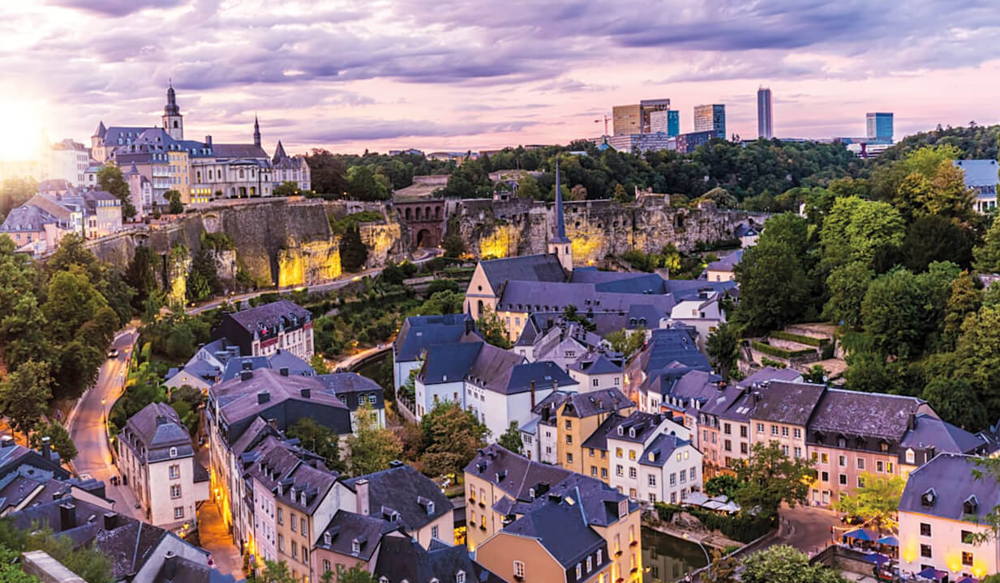
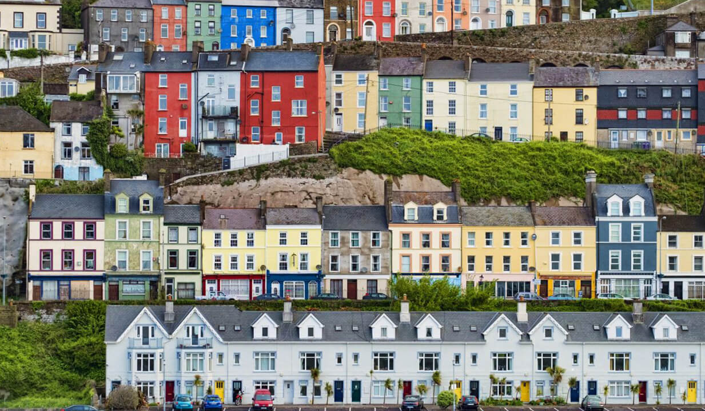
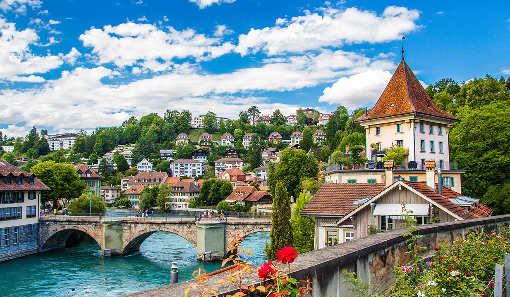
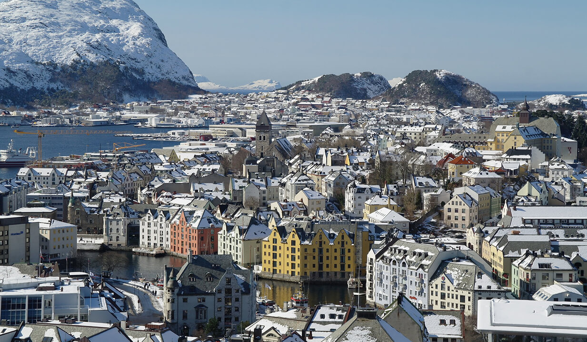
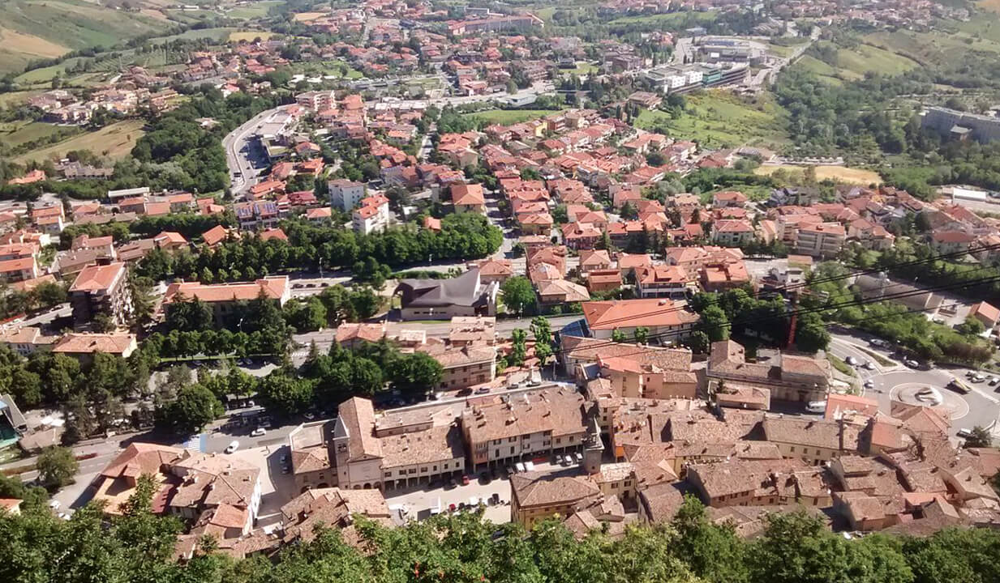
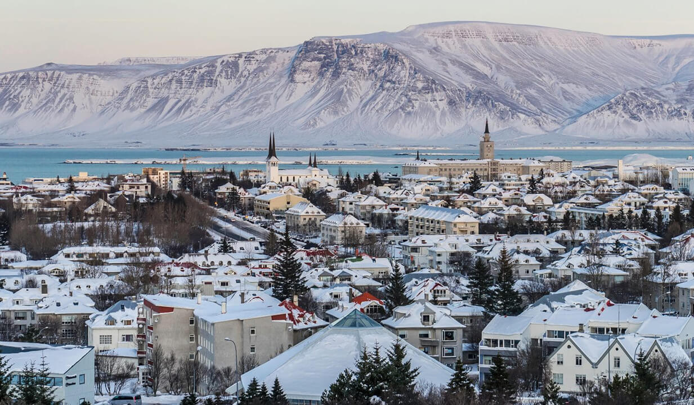
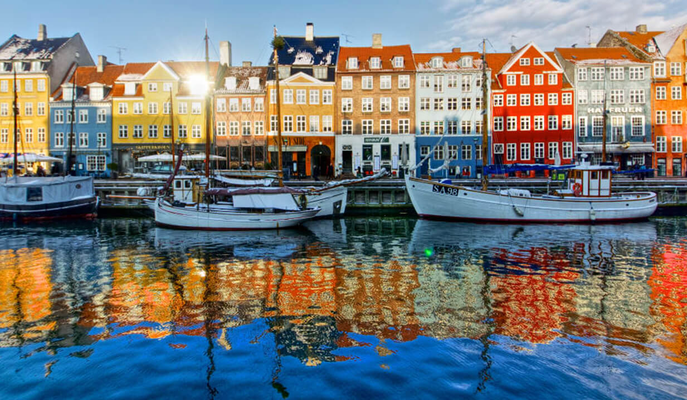
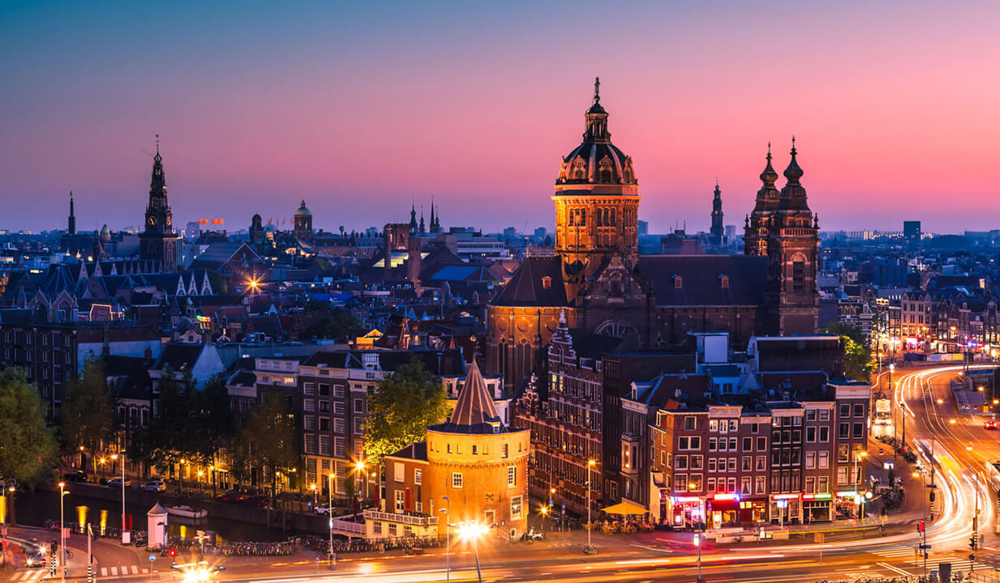
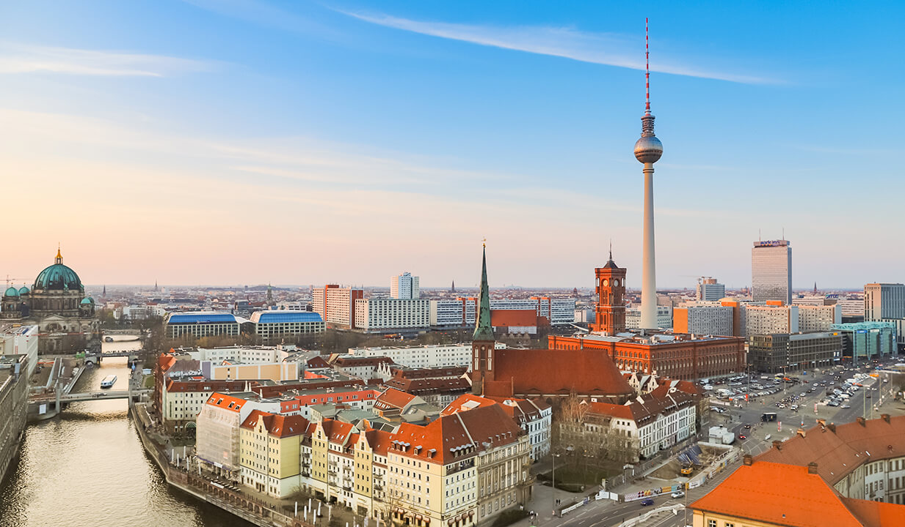

Список найбагатших країн Європи
Люксембург — 1 місце

Світовий рейтинг ВВП: 70 місце (71,105 млрд доларів)
ВВП за ПКС на душу населення: 121 292 доларів
Люксембург, попри свої скромні розміри, є досить високорозвиненою країною та займає перше місце в рейтингу найбагатших країн Європи. Основний дохід країни приходить від сфери послуг, торгівлі та фінансів. Люксембург приваблює іноземних фінансистів та своєю політикою заохочує реєструватися великі транснаціональні компанії.
Ірландія — 2 місце

>
>
Світовий рейтинг ВВП :32 місце (388,699 млрд доларів)
ВВП за ПКС на душу населення:88,240 доларів
Економіка Ірландії за останні двадцять років поступово набирає свої оберти та багато в чому залежить від торгівлі. В останні роки одна з найбагатших країн Європи отримує велику кількість іноземних інвестицій. Телекомунікація в цій країні вважається однією з найрозвиненіших серед всіх країн Європейського Союзу.
Швейцарія — 3 місце

Світовий рейтинг ВВП:20 місце (703,082 млрд доларів)
ВВП за ПКС на душу населення:70 989 доларів
Економіка Швейцарії вважається однією з найстійкіших та конкурентоспроможних у світі, що приваблює інвесторів з усього світу. Ця країна є банківським та фінансовим серцем всієї Європи, а банківська справа — основа економіки Швейцарії, яка впевнено закриває трійку найбагатших країн Європи. Крім цього всім відомі швейцарські Rolex, Nestlé та Swatch, а вдале територіальне розташування дозволяє країні тримати багато важливих міжнародних торговельних зв’язків.
Норвегія — 4 місце

Світовий рейтинг ВВП: 30 місце (403,336 млрд доларів)
ВВП за ПКС на душу населення: 66 831 доларів
Ця скандинавська країна постійно потрапляє у рейтинги з найвищим рівнем життя місцевого населення. Економіка Норвегії пов’язана зі значними запасами нафти та природного газу та газового конденсату. Також країна є гарним прикладом, де поєднується ринкова активність та велика частка державної власності, що в поєднанні з першим дало четверте місце в списку найбагатших країн Європи.
Сан-Марино — 5 місце

Світовий рейтинг ВВП:168 місце (1,638 млрд доларів (2018 р.))
ВВП за ПКС на душу населення:60 750 доларів
Основними галузями економіки однієї з шести європейських держав-карликів є банківська справа, туризм, та виноробство. Цікавим є той факт, що десяту частину доходу країна отримує від продажу поштових марок та сувенірів. Також країна має один з найнижчих рівнів безробіття у світі.
Ісландія — 6 місце

Світовий рейтинг ВВП: 104 місце (24,188 млрд доларів)
ВВП за ПКС на душу населення: 60 061 доларів
Ця маленька та непостійна економіка скандинавського типу обіймає шосте місце у топі найбагатших країн Європи. Вона характеризується високим рівнем вільної торгівлі та державного втручання. Основними галузями економіки Ісландії є туризм, рибництво та виробництво електроенергії. Також країна має сильну орієнтацію на експорт морепродуктів, металів та програмного забезпечення.
Данія — 7 місце

Світовий рейтинг ВВП:37 місце (348,078 млрд доларів)
ВВП за ПКС на душу населення:59 830 доларів
Це індустріально-аграрна країна з високим рівнем розвитку. Данія сильно залежить від зовнішнього ринку, адже бідна на корисні копалини, але є повністю самодостатньою в плані енергоресурсів. Розвинена ринкова економіка Данії залежить від імпортної сировини та зовнішньої торгівлі. Одним з найвідоміших данських брендів є конструктор «Лего» (дан. leg godt — «грай добре»).
Нідерланди — 8 місце

>
Світовий рейтинг ВВП: 17 місце (909,070 млрд доларів)
ВВП за ПКС на душу населення:59 686 доларів
Нідерланди мають вигідну позицію в середині Західної Європи, тож місце в списку найбагатших країн Європи їй постійно замовлено. Найважливішими секторами економіки є торгівля та транспорт. Надійна інфраструктура, сприятлива підприємницька атмосфера та високоякісний ринок праці приваблюють в країну багато компаній. Економіка Нідерландів відрізняється низьким безробіттям та інфляцією.
Австрія — 9 місце
Світовий рейтинг ВВП:27 місце (446,315 млрд доларів)
ВВП за ПКС на душу населення: 59 110 доларів
Німеччина є основним торговим партнером Австрії, що робить її вразливою перед швидкими змінами в німецькій економіці. Країна має великий сектор послуг та невеликий, але дуже розвинутий сільськогосподарський сектор. У країні дуже високий рівень життя, а за своїм економічним розвитком Австрія випереджає багатьох членів ЄС.
Німеччина — 10 місце

Світовий рейтинг ВВП: 4 місце (3 845,630 млрд доларів)
ВВП за ПКС на душу населення:56 052 доларів
Провідна економіка та одна з найбагатших країн Європи є найбільш відкритою національною економікою серед країн Великої сімки. Німеччина займає перше місце для проведення міжнародних виставок — дві третини глобально значущих галузевих заходів проходять там. А перерахування відомих на весь світ брендів, що з’явилися в Німеччині, займає дуже довгий час.
Варто зазначити, що до цього списку не потрапили Ліхтенштейн (151 місце (6,796 млрд доларів) — за даними ООН за 2018 рік) та Монако (149 місце (7,189 млрд доларів) — ООН, 2018 рік). Річ у тому, що Світовий банк не має чітких даних щодо цих країн. Однак, у Ліхтенштейні за 2017 рік ВВП на душу населення (без урахування ПКС) склало 173 356 доларів, а у Монако за 2018 рік — 185 829 доларів.